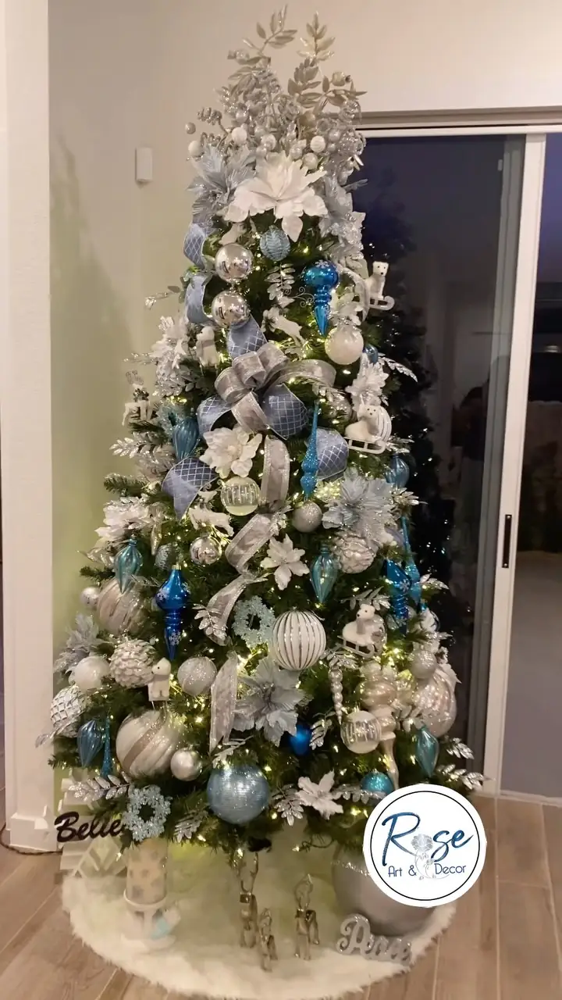
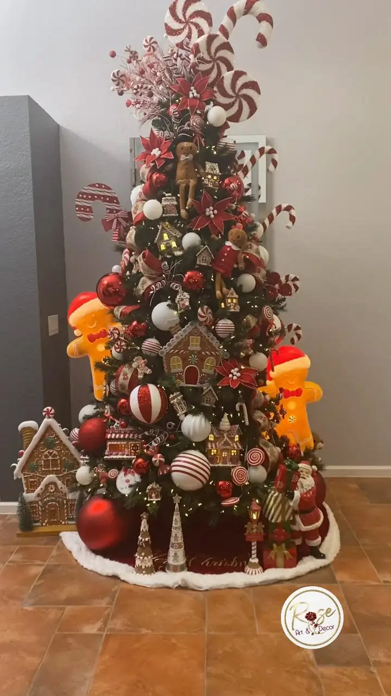

Miami / pick your palette
Every tree on this site started as a decision about two or three colors. Here is what each of the recurring palettes actually does to a room, so the choice is made on purpose rather than at the shop.

The traditional one, and the one most people picture when they say Christmas. It reads warm, it photographs well at night, and it holds up in a room that already has wood, leather or terracotta in it.
The risk is flatness, because red and gold are both saturated. It gets solved with texture: velvet ribbon against glass, matte against mirror, and poinsettia forms breaking up the round shapes.
The quiet one. It disappears into a neutral room in the best way, and it is the palette that reads most expensive in daylight. Magnolias, doves and matte gold do most of the work.
It needs more layers than a red tree to avoid looking sparse, because there is no strong contrast doing the work for you. This is where oversized pieces earn their keep.
The modern one, and the one that behaves best in a white Miami interior. Flocked branches, iced glass, polar bears at the base and a lot of cool metal.
It is also the palette that most rewards good lighting, because the cool tones can go grey under warm bulbs. Worth deciding before the lights go on the tree, not after.
Nutcracker and gingerbread are not really palettes, they are subjects. A nutcracker tree brings drums, ribbon runs and figures at floor level, and it works in a large room or a lobby where it has space to be theatrical.
Gingerbread is the one children vote for every time: candy canes, little houses at the base, and colors that would be wrong anywhere else. If there are kids in the house, this is usually the tree they remember.



The gallery
Real rooms in Miami, photographed on the day the tree was finished. No staging, no stock.


More on Instagram, six seasons deep. Follow the work
Name it on the quote form, or send a photo of the room and let us suggest two or three directions instead.